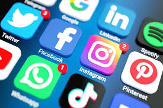

Top 5 Redes Sociais mais Usadas no Brasil em 2023

1-Whatsapp
Uma das plataformas mais usadas considerada como Rede Social segundo a wikipedia, que diz que toda plataforma com uma estrutura social composta por pessoas ou organizações, conectadas por um ou vários tipos de relações, que compartilham valores e objetivos em comum.” O Whatsapp pode ser considerado uma rede social, pois através do aplicativo compartilhamos várias situações, construímos relações e até podemos dizer que o aplicativo nos ajuda a atingir um objetivo em comum, já que muitas empresas utilizam o Whatsapp para a comunicação entre os seus funcionários.
2-Youtube
Aplicativo aonde pessoas "influencers" podem postar videos, interagir, fazer lives, ate mesmo conversar pelos comentarios. A partir de uma quantidade de incritos seus videos podem começar a monetizar, o que é bom pois voce acaba tendo uma renda.
3-Instagram
Uma das maiores redes Sociais, com mais de 113 milhoes de acessos, o aplicativo tem caixa de mensagens, storys, feed, alem de varias opçoes de interaçoes com seus seguidores, influencers podem monetizar seu perfil, assim como o youtube, podem ter outras formas de ganhar dinheiro no instagram, como exemplo fazendo publicidades.
4-Facebook
Usado para publicar uma coisa no qual esteja fazendo, um lugar no qual está, até mesmo vender coisas que voce nao utiliza mais, abrir grupos para vendas, apesar do facebook estar morto muitas pessoas ainda usam ele por algum motivo, o instagram é a mesma coisa, so que mais atual e moderno.
5-Tik Tok
Rede Social usada para gravar videos de varios tipos, como danças, vlogs, humor, historias, fazer lives enfim, alem de monetizar se souber usar.
6-Twitter
A melhor plataforma que existe por isso ela é o bonus. Usada para escrever o que sente, o que acha, indireta, direta, e alem de tudo ironia, dar twitte no que quizer sem ninguem encher o saco
Professor:Miderson
Karine Marçal e Lunara Milena
2 ano C